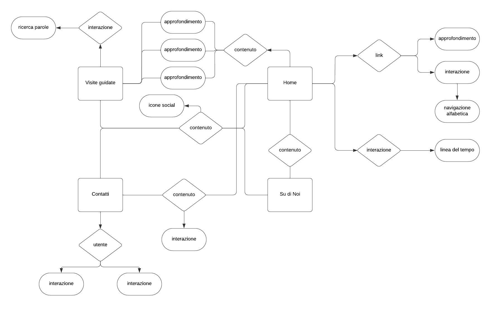
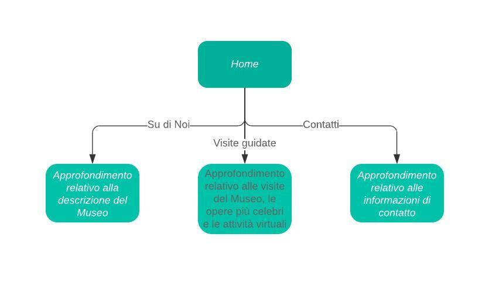

Creare un portale culturale online che offra una panoramica completa e coinvolgente delle opere d'arte italiane, concentrando l'attenzione su dipinti e sculture. Il progetto mira a promuovere la cultura italiana, la sua storia artistica e a rendere accessibile il patrimonio artistico del paese a un vasto pubblico internazionale.
L'obbiettivo di "Arte Italia" è fornire informazioni su mostre, collezioni, eventi e servizi offerti dal museo. Inoltre il sito mira a promuovere l'interesse per l'arte, la cultura e la storia, incoraggiando il pubblico a visitarlo di persona.
Il sito è rivolto a diverse categorie di pubblico, tra cui:
Il sito web del museo sarà accessibile a tutti gli utenti tramite un'interfaccia intuitiva. Sarà ottimizzato per diverse piattaforme, tra cui desktop, tablet e dispositivi mobili.
I contenuti del sito sono stati integrati dai media: sono presenti immagini e testi.
Attualmente esistono diversi siti web dei musei che offrono una vasta gamma si servizi e caratteristiche per gli utenti. Questi includono:
Un nuovo sito web sullo stesso argomento potrebbe essere necessario per molteplici motivi. Ad esempio:
Parlando di servizi presenti in altri progetti, ma che possono essere riusati, si può fare riferimento a siti web di argomenti simili come altri musei. Ad esempio, se il museo che si sta creando è specializzato in arte moderna, potrebbe prendere spunto da un sito web di un'altra istituzione che si occupa dello stesso argomento, utilizzando le stesse caratteristiche dell'architettura del sito, dell'interfaccia utente e degli strumenti di presentazione delle opere. Questo permetterebbe di risparmiare tempo e risorse nello sviluppo del nuovo sito web, senza dover partire da zero nella creazione di una piattaforma efficiente.
Due esempi di siti web concorrenti potrebbero essere:
Per la creazione della mappa è stato messo il Titolo dell'argomento al centro, successivamente a questo sono stati sviluppati i nodi che comprendono le categoria all'interno del tema. I concetti sono stati poi organizzati in una struttura gerarchica, dove i concetti più generali si trovano vicino al titolo, mentre quelli più specifici sono più lontani.
Secondo questo schema si può vedere come, dalla home page, si possono raggiungere altre tre pagine. Queste sono arrivabili dal menu principale, mentre le pagine "Su di Noi" e "Contatti" anche attraverso dei bottoni sempre presenti nella home page. In Arte Italia è presente una grande quantità link, non sono stati inseriti tutti i collegamenti perchè l'idea di base è arrivare ad una pagina da vari punti differenti del sito web.
Il sito web è strutturato in diverse sezioni, ciascuna dedicata a un aspetto specifico del museo e delle sue offerte. La pagina è suddivisa in sezioni ben definite, tra cui la sezione dell'intestazione con il logo del museo e la navigazione, seguita da una sezione introduttiva, visite guidate, highlights delle opere d'arte, un catalogo per visualizzare le opere presenti, attività da svolgere presso il museo e una linea del tempo della storia del museo.
Intestazione (Header): Contiene il logo del museo e la navigazione principale, con un'icona a hamburger per mostrare/nascondere il menu a tendina. Sezione Intro: Una breve descrizione del museo e del suo scopo principale, con un pulsante per saperne di più. Visite Guidate: Una sezione che descrive le diverse visite guidate offerte dal museo, con dettagli su orari e contenuti. Highlights: Una selezione delle opere d'arte più iconiche presenti nel museo, ciascuna con un'immagine e un link alla pagina dedicata. Catalogo: Una sezione dedicata alle varie opere, con un link per ciascuna di queste che porta ad una pagigina dedicata alla singola opera. Casa: Un'area che presenta varie attività e programmi offerti dal museo per coinvolgere i visitatori, con immagini e descrizioni brevi. Linea del Tempo: Una sequenza temporale che illustra gli eventi salienti nella storia del museo.
La navigazione avviene principalmente attraverso il menu a tendina nell'intestazione, che mostra i link alle pagine principali del sito. Ogni sezione ha link interni che consentono agli utenti di spostarsi facilmente tra le diverse parti della pagina.
L'architettura logica della pagina web si sviluppa attraverso diverse sezioni, ciascuna con uno scopo specifico nell'ambito della presentazione e della navigazione del contenuto. Al vertice di questa struttura troviamo l'header, che ospita il logo del museo e fornisce un menu di navigazione per consentire agli utenti di accedere facilmente alle diverse sezioni del sito.
Gli elementi della pagina includono la sezione sub-header, dove è presentato in evidenza il titolo della pagina corrente insieme a un breve messaggio di benvenuto. Qui gli utenti possono trovare informazioni chiave riguardanti la missione e l'offerta del museo, oltre a un invito a esplorare ulteriormente il sito tramite un pulsante di navigazione.
Gli strumenti di navigazione, come l'icona del menu a scomparsa attivabile, permettono agli utenti di interagire con la struttura della pagina e di accedere rapidamente alle sezioni desiderate. Attraverso questi strumenti, gli utenti possono esplorare le varie offerte del museo, accedere alle informazioni di contatto e interagire con il museo tramite i social media.
L'architettura logica della pagina web si articola in diverse sezioni, ciascuna con uno scopo ben definito nel presentare e nel fornire informazioni sul capolavoro artistico in questione. Al vertice di questa struttura troviamo la sezione sub-header, che contiene il logo del museo, il menu di navigazione e il titolo della pagina, offrendo agli utenti un punto di accesso intuitivo ai contenuti principali del sito.
Gli elementi chiave della pagina includono il contenuto centrato attorno all'opera d'arte in questione, l'Annunciazione di Leonardo Da Vinci, presentato attraverso immagini e testi descrittivi. Questa sezione fornisce una panoramica approfondita della scultura, includendo informazioni sulla sua storia e la sua importanza artistica.
Gli strumenti di navigazione, come l'icona del menu a scomparsa, permettono agli utenti di interagire con la struttura della pagina e di accedere rapidamente alle sezioni desiderate. Inoltre, il link "Torna al catalogo" aggiunge un ulteriore strumento di navigazione che consente agli utenti di tornare facilmente alla pagina precedente.
Il codice è strutturato in sezioni chiare e distinte, ciascuna contenente informazioni specifiche sulle visite guidate, gli highlights, il museo virtuale, la linea del tempo e altro ancora. L'utilizzo di tag semantici come section, nav, h1, h2, p, ul, li contribuisce a una migliore organizzazione e comprensione del contenuto.
È stata adottata una formattazione coerente e uniforme per i titoli e i paragrafi, utilizzando tag h1, h2 e p. Il testo è ben leggibile grazie alla scelta di colori contrastanti rispetto allo sfondo. Il font utilizzato è "Oranienbaum", scelto per la sua eleganza e leggibilità.
I colori utilizzati sono abbinati in modo armonioso e coerente con il tema artistico del sito. L'uso di tonalità di bianco e grigio per lo sfondo mette in risalto il contenuto principale, mentre i colori più vivaci vengono utilizzati per evidenziare elementi importanti come i pulsanti e i link.
Sono state utilizzate icone provenienti dalla libreria di Font Awesome per migliorare l'esperienza visiva e comunicare in modo intuitivo le azioni disponibili per l'utente. Le icone sono integrate in modo efficace nel layout senza appesantire l'interfaccia.
È stato incluso il font "Oranienbaum" dalla libreria di Google Fonts per aggiungere un tocco di eleganza e personalità al testo. Il font è leggibile anche a dimensioni ridotte e si adatta bene allo stile complessivo del sito.
Ricerca interna al sito: Un modulo di ricerca interno al sito potrebbe consentire agli utenti di cercare opere d'arte specifiche, artisti o informazioni sui servizi offerti dal museo. Filtri di ricerca avanzati: Aggiungere filtri di ricerca avanzati basati su criteri come epoca, stile artistico, autore o tipo di opera potrebbe aiutare gli utenti a restringere rapidamente i risultati desiderati. Navigazione per categorie: Oltre ai canali di navigazione già presenti, si potrebbe aggiungere una navigazione per categorie specifiche di opere d'arte, come pittura, scultura, arte contemporanea, etc. Visualizzazione per tour tematici: Offrire tour tematici predefiniti, come "Rinascimento italiano", "Barocco europeo", "Arte moderna italiana", permetterebbe agli utenti di esplorare il museo in base ai loro interessi specifici.
Linea del tempo: una linea del tempo è uno strumento visivo che rappresenta gli eventi in ordine cronologico. Può essere utilizzato per tracciare la sequenza di eventi nel corso del tempo, evidenziando le relazioni temporali tra di essi. E' utile per visualizzare la sequenza temporale degli eventi, comprendere la cronologia di un processo o di una serie di eventi storici, e per identificare le correlazioni temporali. Indici per parole: gli indici per parole sono strumenti che indicizzano le parole presenti in un testo, fornendo un elenco delle parole e delle loro posizioni nel testo. E' utile per cercare rapidamente le occorrenze di parole specifiche all'interno di un testo lungo o complesso, facilitando la ricerca e l'analisi di concetti chiave. Parole chiave: le parole chiave sono termini significativi o concetti fondamentali all'interno di un testo, utilizzati per rappresentare il suo contenuto in modo conciso. Sono utili per identificare i concetti principali o le informazioni rilevanti in un testo, semplificando la comprensione e l'analisi del contenuto. Immagine Maps: un'immagine mappa (o mappa di immagine) è un'immagine grafica che contiene regioni o punti cliccabili collegati a URL o informazioni aggiuntive. E'tile per creare navigazione interattiva all'interno di un'immagine, come mappe geografiche cliccabili, diagrammi organizzativi con link ai profili dei dipendenti o infographic interattive. Può essere utilizzato per fornire informazioni dettagliate o per guidare l'utente attraverso una serie di collegamenti ipertestuali.
Tour virtuale: Offrire un tour virtuale del museo permetterebbe agli utenti di esplorare le gallerie e le opere d'arte dall'ambiente confortevole delle proprie case. Audio guide online: Fornire guide audio online per le opere d'arte più importanti, consentendo agli utenti di ascoltare informazioni dettagliate mentre navigano attraverso il sito. Traduzioni multilingue: Integrare traduzioni multilingue per consentire agli utenti di accedere al contenuto del sito nella propria lingua madre. Community di appassionati d'arte: Creare un forum o una sezione di commenti dove gli utenti possono discutere delle opere d'arte, condividere opinioni e suggerimenti. Contenuti educativi aggiuntivi: Offrire risorse educative aggiuntive come video tutorial, articoli approfonditi o quiz per arricchire l'esperienza degli utenti e promuovere l'apprendimento.